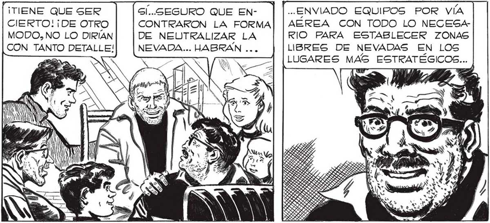
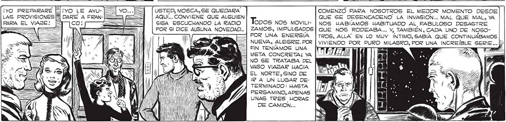

322 ¡TIENE QUE SER GÍ..GEGURO QUE EN- .. ENVIADO EQUIPOS POR VÍA CIERTO! ¡DE OTRO CONTRARON LA FORMA] | AÉREA CON TODO LO NECESAMODO, NO LO DIRÍAN DE NEUTRALIZAR LA RIO PARA ESTABLECER ZONAS CON TANTO DETALLE! NEVADA... HABRAN na LIBRES DE NEVADAS EN LOS : LUGARES MAS ESTRATÉGICOS... PARA EL NORTE DEL PAIS LA ZONA DE SEGURIDAD UA SIDO ESTABLECIDA EN EL TRIANGULO FORMADO POR LAS POBLACIONES DE SUNCHO CORRAL, QUIMILI! Y TINTINA EN SANTIAGO DEL ESTERO; EL OESTE DEL PAIS TIENE SU ZONA DE SEGURIDAD EN LA FAJA COMPRENDIDA ENTRE SAN CARLOS Y SAN RAFAEL, EN MENDOZA; EN CUANTO A LOG SOBREVIVIENTES DEL SUR, DEBEN ESPERAR TODAVÍA : EN CUANTO ESTEMOS EN CONDICIONES ESTABLECEREMOS UNA FAJA DE SEGURIDAD EN ALGÚN ¡YO SALDRE A ¡POR FIN!¡ YA NO ANDATRAER EL REMOS COMO BOLA SIN MANIJA, SIN SABER QUÉ MION QUE EN-[ HACER! ¡ALJORA TENECUENTRE ! MOS ADÓNDE IR! e á LAS ZONAS LIBRES DE NEVADA QUE HEMOS CONSEGUIDO ESTABLECER PARA BOLIVIA SON: PARA LA PAZ, COCHABAMBA, ORURO Y NORTE DE POTOSI, EL TRIANGULO COMPRENDIDO ENTRE TARATA, SACABA Y TAPACAR!I.. PARA EL NORTE DEL PAIS UNA FAJA ENTRE SAN JOAQUIN Y SAN RAMON, EN LA PROVINCIA DE BENI... ¿GE DA CUENTA, SEÑOR MOSCA? ¡PRONTO ESTAREMOS EN UN LUGAR DONDE YA NO HAY MAS ¡QUIETO, PABLO: TENGO QUE ANOTAR LA HORA DE LA TRASy y Se S k = ” S / > = / j y OS 6 / PRESAS == Con TODA PROLIJIDAD LA RADIO UBICABA AHORA LA ZONA DE SEGURIDAD ESTABLECIDA PARA LOS DEMAS PAÍGES DE HISPANOAMERICA... PERO NO ESCUCHABAMOS YA... ¡YO PREPARARE [E ¡YO LE AYU- USTED, MOSCA,SE QUEDARA COMENZÓ PARA NOSOTROS EL MEJOR MOMENTO DESDE LAS PROVISIONES [$] DARE A FRAN AQUI... CONVIENE QUE ALGUIEN QUE SE DESENCADENO' LA INVASION... MAL QUE MAL, YA PARA EL VIAJE! , ==]|S ] SIGA ESCUCHANDO LA RADIO Topos NOS MOVILI- | NOS HABIAMOS HABITUADO AL FABULOSO DESASTRE === === === <==3 POR Gl DICE ALGUNA NOVEDAD... | ZAMOS, IMPULSADOS | QUE NOS RODEABA... Y, TAMBIÉN, CADA UNO DE NOSOÁ = PA /// a VN | pa q POR UNA ENERGIA |TROS, ALLA EN LO MUY ÍNTIMO, SABÍA QUE CONTINUABAMOS NUEVA, ALEGRE.POR | VIVIENDO POR PURO FIN TENIAMOS UNA a META CONCRETA; YA ÍE| NO SE TRATABA DEL VAGO VIAJAR HACIA EL NORTE,SINO DE IR A UN LUGAR DETERMINADO: HASTA MN na PERGAMINO, APENAS | ISS UNAS TRES HORAS | | il ! | DE CAMION... / / |

